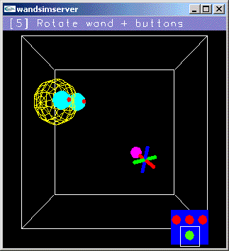

Input Devices
Syzygy Supported Input Devices
Most input devices get their real-time data served up to other
Syzygy nodes through a single executable, DeviceServer. DeviceServer is
invoked with on command-line argument containing the name of the device
driver to use and with a slot number that determines the name of
the service offered:
DeviceServer [driver_name] [driver_slot]
Roughly speaking, if driver_slot is set to 2, then the DeviceServer will offer a service with name SZG_INPUT2. Only one service can be offered at a given time with a particular name, so different slots are used to allow different input devices to exist in the system simultaneously. Note that, by default, the syzygy applications will be attempting to connect to the SZG_INPUT0 service. To find out more specifics about service names and connection brokering, please see the chapter of configuration examples.
Some devices have additional parameters associated with them, as for configuration. These parameters are stored in the database via a service name, corresponding to a group of Syzygy database parameters (e.g. SZG_JOYSTICK for joystick devices). On the DeviceServer computer, this group will contain parameters needed to configure the device.
The DeviceClient executable can be used to test a DeviceServer. It takes one command-line argument, the driver slot associated with the DeviceServer to which it wishes to connect. Run:
DeviceClient [driver_slot]
You should see a print-out of the device's input state, updated 10
times a second.
The rest of this file is a list of supplied input device drivers,
beginning with the input simulator program wandsimserver.
wandsimserver
Platform:
All platforms.
Service: none
This VR interface emulates a 6DOF tracker + joystick (with tracking sensors attached to head and joystick) with mouse and keyboard. Keys 1 through 7 activate its various modes:
Command: DeviceServer arJoystickDriver [driver_slot]
Platform: Linux and Windows.
Service: none
Run this on a host with a joystick attached. Linux hosts use the joystick device /dev/js0. Win32 hosts use the default DirectInput joystick. JoystickServer's data is in the format of 20 buttons and 20 axes, accessed through an arJoystickClient object.
Command: DeviceServer arIntelGamepadDriver [driver_slot]
Platform: Windows.
Service: none
Run this on a Win32 host with an Intel Wireless Series Gamepad attached. GamepadIntelServer emulates a joystick, so it sends data to an arJoystickClient object just like "arJoystickServer". The two axes correspond to the D-pad's horizontal and vertical axes; holding the D-pad for a few moments increases the value. The 20 buttons are the following, in order: A, B, C, X, Y, Z, L (left trigger), R (right trigger); then the same buttons with the gamepad's shift key held down, namely D, E, F, U, V, W, G, H; then the HOME and END keys for the gamepad's start button, unshifted and shifted. Since Windows sees this gamepad as a DirectInput keyboard, a normal keyboard can also be used.
Command: DeviceServer arMotionstarDriver [driver_slot]
Platform: All platforms.
Service: SZG_TRACKER
Run this on a host connected via Ethernet to the base station PC of an Ascension Motionstar motion tracker.
TRACKER_COMPUTER SZG_TRACKER IPhost XXX.XXX.XXX.XXX XXX.XXX.XXX.XXX is the IP address of the Motionstar base station.
Command: DeviceServer arFaroDriver [driver_slot]
Platform: All platforms.
Service: none
Run this on a host connected via RS232 to a FaroArm mechanical motion tracker. It reports one transformation matrix which takes into account the probe dimensions, as well as two boolean-valued buttons.
Command: DeviceServer arBirdWinDriver [driver slot]
Platform: Windows. We are working on a cross-platform FOB driver.
Service: none
Run this on a host connected to an Ascension Flock of Birds motion tracker.
Command: DeviceServer arSpacepadDriver [driver_slot]
Platform: Windows 98.
Service: SZG_TRACKER
Run this on a host connected to an Ascension Spacepad motion tracker.
TRACKER_COMPUTER SZG_TRACKER transmitter_offset 0.972229/0.196838/0.123962/0/-0.0494389/0.695801/-0.716003/0/-0.227356/0.69043/0.686707/0/0.0876952/6.71073/-2.72462/1 Matrix (a sequence of 16 floats, representing an 4x4 matrix, in OpenGL order) by which we post-multiply the the matrix returned by the device. This compensates for the possibility that the tracker antennae might be rotated so that a sensor position that should be the identity matrix is, in fact, not reported by the tracker that way. TRACKER_COMPUTER SZG_TRACKER sensor0_rot 0/0/1/-90 A rotation matrix by which we pre-multiply the matrix returned by the device. This compensates for the possibility that we might place the sensors on the wand or glasses in something other than the default position. Here, the head sensor (sensor 0) has been rolled by 90 degrees (i.e. it's on the side of the glasses). TRACKER_COMPUTER SZG_TRACKER sensor1_rot 0/0/1/180 Same as above, but for sensor 1 (the wand sensor).
Command: DeviceServer arEVaRTDriver [driver_slot]
Platform: Windows.
Service: SZG_EVART
Run this to retrieve data from an EVaRT-based optical motion tracking system from Motion Analysis.
TRACKER_COMPUTER SZG_EVART IPhost XXX.XXX.XXX.XXX XXX.XXX.XXX.XXX gives the IP address of the EVaRT system.
Command: DeviceServer arIntersenseDriver [driver_slot]
Platform: Windows/Linux.
Service: SZG_INTERSENSE
Run this to retrieve data from an Intersense tracker. Due to the unified nature of the Intersense tracker drivers, this should work with any of the trackers in the Intersense line.
The Intersense driver is very configurable. You will need to set parameters in the Phleet database to use your tracker.
TRACKER_COMPUTER SZG_INTERSENSE sleep 10/0 Sleep for 10 msec between polling the tracker. TRACKER_COMPUTER SZG_INTERSENSE station0_1 0/0/0 The 1st sensor associated with the 0th tracker has 0 buttons and 0 axes. Perhaps it is a head sensor. TRACKER_COMPUTER SZG_INTERSENSE station0_2 4/2/0 The 2nd sensor associated with the 0th tracker has 4 buttons and 2 axes. TRACKER_COMPUTER SZG_INTERSENSE convert0_0 0/0/-1.0/2.0 TRACKER_COMPUTER SZG_INTERSENSE convert0_1 1.0/0/0/1.0 TRACKER_COMPUTER SZG_INTERSENSE convert0_2 0/-1.0/0/-2.0 TRACKER_COMPUTER SZG_INTERSENSE convert0_3 0/0/0/1.0 A 4x4 conversion matrix used to convert the Intersense coordinate system to the Syzygy coordinate system. The 4th column (the translation) will vary from installation to installation, but the first should be generally applicable. Specifically, ( 0, 0, -1 ) ( 1, 0, 0 ) ( 0, -1, 0 ) Converts from Intersense coordinates to Syzygy coordinates.
PLEASE NOTE: You'll need to install the shared library (from Intersense) as appropriate for your system to have this driver work.
Command: DeviceServer arVRPNDriver
Platform: Linux.
Service: SZG_VRPN.
This creates a bridge between Syzygy programs and input devices as managed by a vrpn server.
TRACKER_COMPUTER SZG_VRPN name Here "name" designates the VRPN device to which one will connect.
Command: DeviceServer arFileSource
Platform: All platforms.
Service: none
This driver provides playback of previously-captured input data. It does so at the same approximate rate as the file's internal time stamps. The file read is "inputdump.xml" as located by searching the SZG_DATA/path. An input event stream can be recorded by sending a DeviceServer instance a "dumpon" message. The logging is ended by sending a "dumpoff" message. The event stream will be saved in a file "inputdump.xml" in the SZG_DATA/path.
Command: DeviceServer arCubeTracker
Platforms: Local: All; Remote: Depends on the joystick driver.
Service: none
This starts up an arMotionstarDriver, and connects to a networked sevice running in driver slot 1.It serves a data stream combining the motion-tracking matrices (for head and wand) from the motionstar with the data from the remote source. This combining makes it easier to reconfigure the interaction by, for instance changing between an actual tracker and the wandsimserver.
Command: DeviceServer arIdeskTracker
Platforms: Windows98
Service: none
This starts up a spacepad driver and a joystick driver, both locally.
Command: DeviceServer arFaroFOB
Platforms: Local: Any; Remote: Windows.
Service: none
Run this on a host connected to a FaroArm. It connects to a remote PC running a Flock-of-Birds, using driver slot 1
Command: DeviceServer arFaroCalib
Platforms: Local: Any; Remote: Any.
Service: none
Run this on any host. It connects over the network to both the Motionstar base PC and to the system hosting the FaroArm using driver slot 1